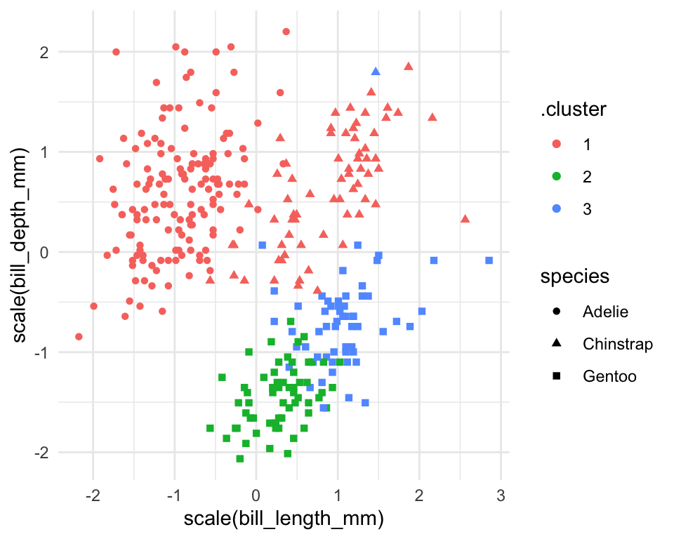
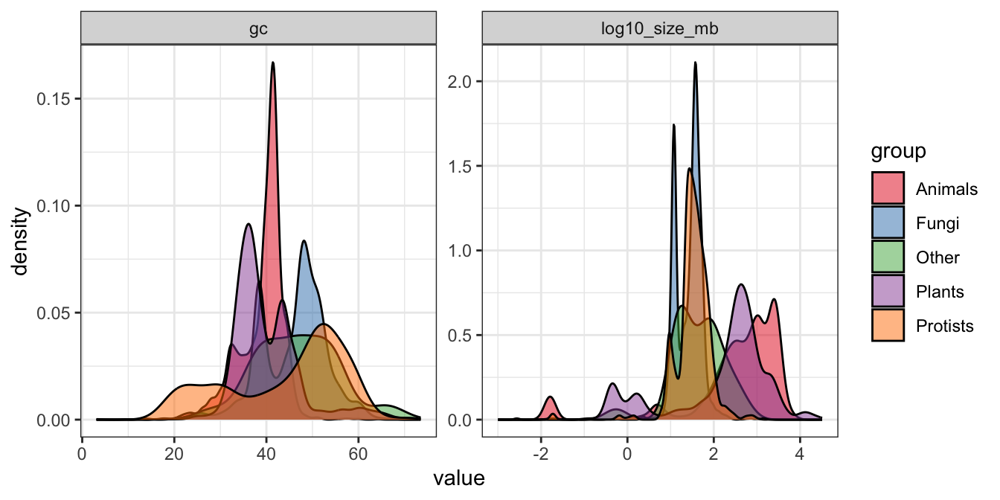
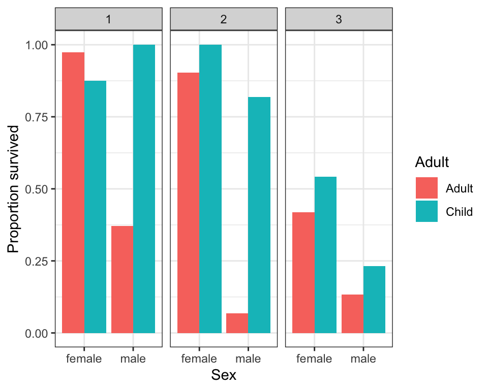
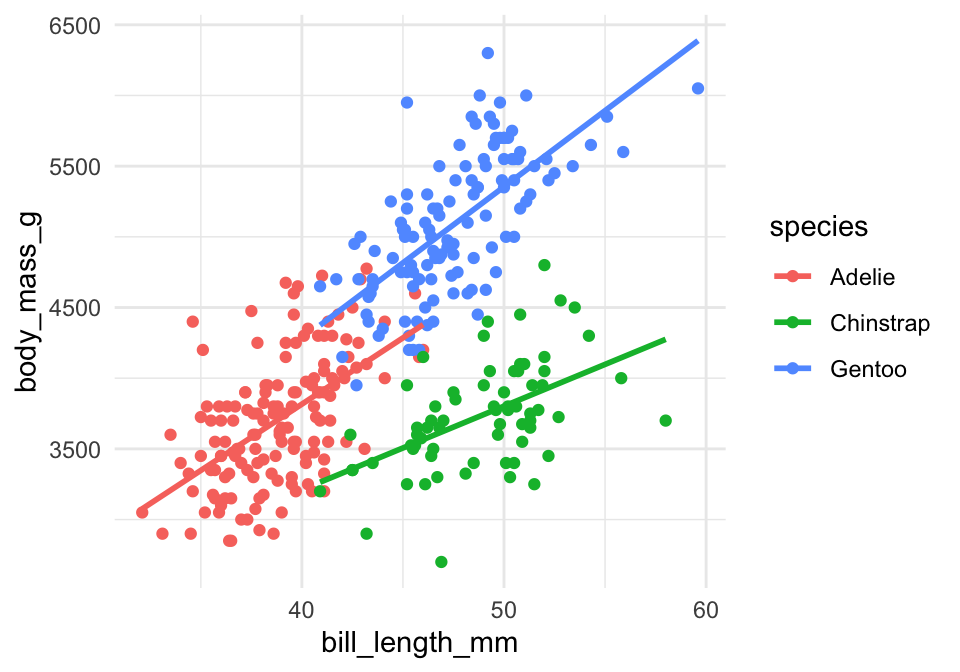
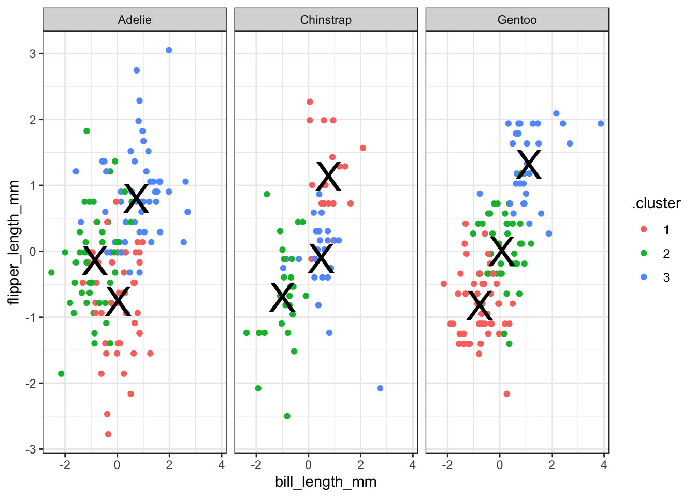
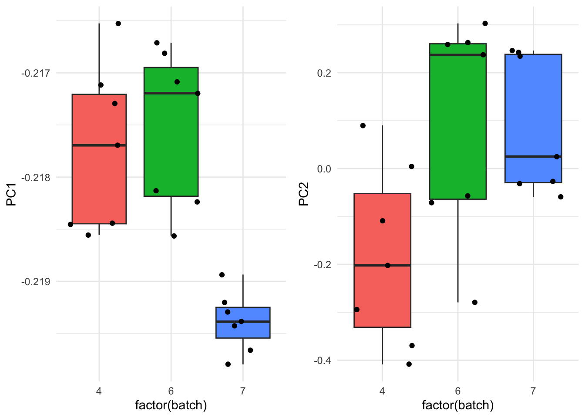
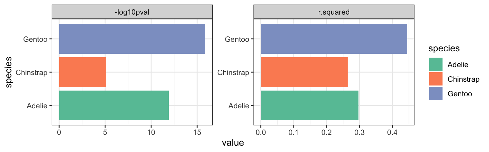
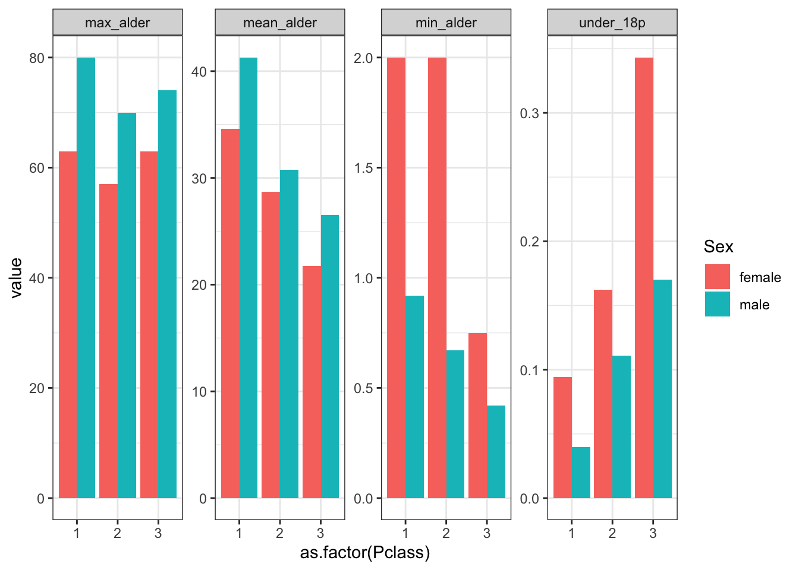
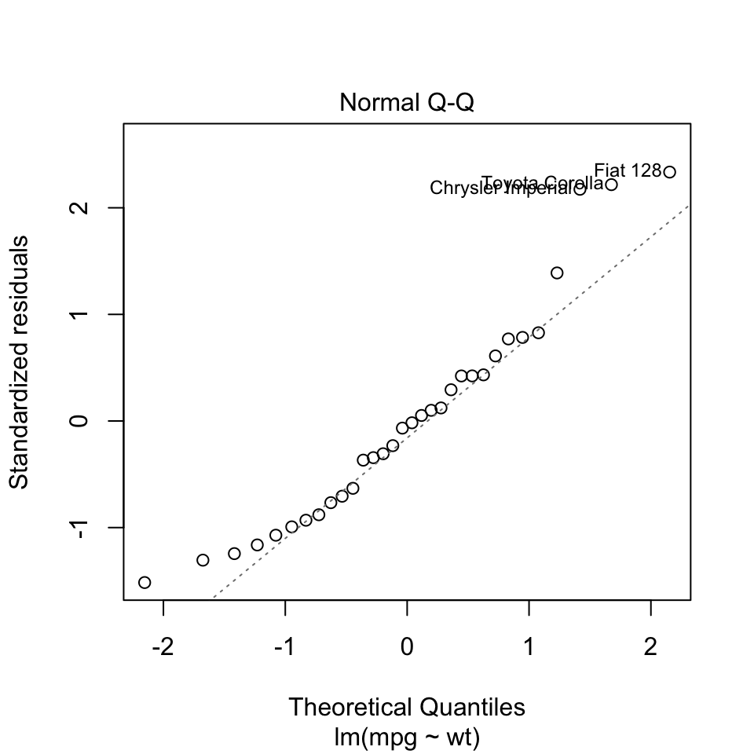

Chapter 6 Bearbejdning dag 2

6.1 Indledning og læringsmålene
I dag fortsætter vi arbejdet med tidyverse, især fokusere vi på pakkerne dplyr og tidyr, som kan bruges til at ændre strukturen af et datasæt, så det passer til den krævede struktur for at kunne lave plots med ggplot2.
I biologi er det ofte tilfældet, at dataene er i en dataframe, mens yderligere oplysninger om prøverne er i en anden dataframe. Derfor vil vi gerne lære, hvordan man forbinder disse to dataframes i R, så vi kan bruge de ekstra oplysninger, når vi laver plots af dataene.
6.1.1 Læringsmålene
Du skal kunne:
- Bruge kombinationen af
group_by()ogsummarise(). - Forstå forskellen mellem
wideoglongdata og brugepivot_longer()til at lette plotting. - Bruge
left_join()eller andre join-funktioner til at tilføje prøveinformation til datasættet.
6.1.2 Videoer
- Video 1 - vi skal kigge lidt nærmere på
group_by()+summarise()og forbindetidyversekode ogggplot2kode sammen med %>%/+.
Link her hvis det ikke virker nedenunder: https://player.vimeo.com/video/546910681
##
## Vedhæfter pakke: 'vembedr'## Det følgende objekt er maskeret fra 'package:lubridate':
##
## hms- Video 2 - wide/long data forms og
pivot_longer()og bruge den i ggplot2
Link her hvis det ikke virker nedenunder: https://player.vimeo.com/video/707081191
- Video 3 - eksempel med titanic summary statistics
Link her hvis det ikke virker nedenunder: https://player.vimeo.com/video/707223997
- Video 4:
left_join()for at forbine tables med ekstra oplysning
Link her hvis det ikke virker nedenunder: https://player.vimeo.com/video/707082269
6.2 group_by() med summarise() i dplyr-pakken
Ved at kombinere group_by() og summarise() kan man finde numeriske svar på spørgsmålet: Havde mænd eller kvinder en højere sandsynlighed for at overleve tragedien?
Lad os starte med at se på en løsning med tapply, hvor vi udregner proportionen af mænd og kvinder, der overlevede. Følgende kode opdeler variablen Survived efter den kategoriske variabel Sex og tager middelværdien. Derved får vi proportionen af overlevende efter køn (da Survived er kodet sådan, at 1 betyder, at man overlevede, og 0 betyder, at man ikke overlevede).
titanic_clean <- titanic %>%
select(-Cabin) %>%
drop_na()
#tapply løsning
tapply(titanic_clean$Survived,titanic_clean$Sex,mean)## female male
## 0.7547893 0.2052980Nu skifter vi over til en tidyverse-løsning. Lad os tage udgangspunkt i summarise()-funktionen. Som et eksempel på, hvordan man bruger funktionen, vil vi beregne en variabel, som hedder “medianFare”, og som er lig med median(Fare).
titanic_clean %>%
summarise("medianFare"=median(Fare))## # A tibble: 1 × 1
## medianFare
## <dbl>
## 1 15.7Vi får faktisk en ny dataramme her, med kun den variabel, som vi lige har specificeret. Vi er dog interesseret i proportionen af overlevende, så vi tager middelværdien af variablen Survived. Lad os gøre det med summarise():
titanic_clean %>%
summarise(meanSurvived = mean(Survived))## # A tibble: 1 × 1
## meanSurvived
## <dbl>
## 1 0.406For at besvare spørgsmålet er vi også nødt til at opdele efter kolonnen Sex. Vi kan bruge kombinationen af group_by() og summarise(). Vi opdeler efter Sex ved at anvende funktionen group_by() og derefter bruger vi summarise() til at oprette en kolonne, der hedder meanSurvived, som viser proportionen af overlevende for både kvinder og mænd.
#tidyverse løsning
titanic_clean %>%
group_by(Sex) %>%
summarise(meanSurvived = mean(Survived))## # A tibble: 2 × 2
## Sex meanSurvived
## <chr> <dbl>
## 1 female 0.755
## 2 male 0.205Lad os tage resultatet fra ovenstående og visualisere det i et barplot, som vist nedenfor:
titanic_clean %>%
group_by(Sex) %>%
summarise(meanSurvived = mean(Survived)) %>%
ggplot(aes(x=Sex,y=meanSurvived,fill=Sex)) +
geom_bar(stat="identity",show.legend = FALSE) + theme_minimal()
6.2.1 Reference af summarise()-funktioner
Her er nogle funktioner, som man ofte bruger med summarise() (der er mange andre muligheder).
| Funktion | Beskrivelse |
|---|---|
mean() |
giver os middelværdien af en variabel. |
sd() |
giver os standardafvigelsen af en variabel. |
min() |
giver os den laveste værdi af en variabel. |
max() |
giver os den højeste værdi af en variabel. |
n() |
giver os antallet af observationer i en variabel og mange flere. |
first() |
giver os de første værdier. |
6.2.2 Flere summeringsstatistikker på én gang
Vi kan også lave flere summeringsstatistikker på én gang. For eksempel kan vi anvende funktionen group_by med Sex igen, men beregne flere forskellige summeringsstatistikker:
titanic_clean_summary_by_sex <- titanic_clean %>%
group_by(Sex) %>%
summarise(count = n(), #count
meanSurvived = mean(Survived), #middelværdi survived
meanAge = mean(Age), #middelværdi age
propFirst = sum(Pclass==1)/n()) #proportionen i første klass
titanic_clean_summary_by_sex## # A tibble: 2 × 5
## Sex count meanSurvived meanAge propFirst
## <chr> <int> <dbl> <dbl> <dbl>
## 1 female 261 0.755 27.9 0.326
## 2 male 453 0.205 30.7 0.223Denne summeringstabel kan igen bruges som et datasæt til at lave et plot med ggplot2. Bemærk, at her bruger vi stat="identity", fordi vi ikke skal tælle observationerne op, men blot plotte præcis de tal, der er i datarammen, på y-aksen. I nedenstående eksempel laver vi barplots for meanAge og propFirst. De er plottet ved hjælp af to forskellige ggplot-kommandoer, og bemærk, at de er plottet ved siden af hinanden ved hjælp af en funktion kaldet grid.arrange() fra R-pakken gridExtra.
plotA <- ggplot(data=titanic_clean_summary_by_sex,aes(x=Sex,y=meanAge,fill=Sex)) +
geom_bar(stat="identity",show.legend = FALSE) +
theme_minimal()
plotB <- ggplot(data=titanic_clean_summary_by_sex,aes(x=Sex,y=propFirst,fill=Sex)) +
geom_bar(stat="identity",show.legend = FALSE) +
theme_minimal()
library(gridExtra)
grid.arrange(plotA,plotB,ncol=2) #plot both together
Vi kan se, at kvinder i gennemsnit var lidt yngre end mænd og havde en højere sandsynlighed for at være i første klasse. Et interessant spørgsmål er, hvordan man kan lave de ovenstående plots uden at bruge to forskellige ggplot-kommandoer. Med andre ord, hvordan man kan lave en automatisk løsning, hvor vi kan plotte flere summeringsstatistikker med kun én ggplot-kommando. Vi vil se, hvordan det kan gøres ved først at konvertere datasættet til long-form.
6.2.3 Mere avanceret group_by()
Lad os også beregne, hvor mange passagerer der var, efter både deres klasse og hvor de gik om bord på skibet:
titanic_clean %>%
group_by(Embarked, Pclass) %>% # Grupper efter flere variable...
summarise(count = n())## `summarise()` has grouped output by 'Embarked'. You can override using the
## `.groups` argument.## # A tibble: 10 × 3
## # Groups: Embarked [4]
## Embarked Pclass count
## <chr> <int> <int>
## 1 "" 1 2
## 2 "C" 1 74
## 3 "C" 2 15
## 4 "C" 3 41
## 5 "Q" 1 2
## 6 "Q" 2 2
## 7 "Q" 3 24
## 8 "S" 1 108
## 9 "S" 2 156
## 10 "S" 3 290Man kan se, at størstedelen gik ombord i Southampton (S), men der var også forholdsvis mange førsteklasses-passagerer, der gik ombord i Cherbourg (C). Lad os fortsætte med vores Survived-eksempel og beregne proportionen af overlevende efter de tre variable Adult, Sex og Pclass.
titanic_clean_summary_survived <- titanic_clean %>%
mutate(Adult = ifelse(Age>=18,"Adult","Child")) %>%
group_by(Adult,Sex,Pclass) %>%
summarise(meanSurvived = mean(Survived))## `summarise()` has grouped output by 'Adult', 'Sex'. You can override using the
## `.groups` argument.titanic_clean_summary_survived## # A tibble: 12 × 4
## # Groups: Adult, Sex [4]
## Adult Sex Pclass meanSurvived
## <chr> <chr> <int> <dbl>
## 1 Adult female 1 0.974
## 2 Adult female 2 0.903
## 3 Adult female 3 0.418
## 4 Adult male 1 0.371
## 5 Adult male 2 0.0682
## 6 Adult male 3 0.133
## 7 Child female 1 0.875
## 8 Child female 2 1
## 9 Child female 3 0.543
## 10 Child male 1 1
## 11 Child male 2 0.818
## 12 Child male 3 0.233Og så kan vi også bruge resultatet i en ggplot, hvor vi kombinerer de tre variable og opdeler det i tre plots efter Pclass:
ggplot(titanic_clean_summary_survived,aes(x=Sex,y=meanSurvived,fill=Adult)) +
geom_bar(stat="identity",position = "dodge") +
facet_grid(~Pclass) +
ylab("Proportion survived") +
theme_bw()
6.2.4 Funktionen ungroup()
Nogle gange, når man er færdig med en proces, men gerne vil arbejde videre med et datasæt, er det nyttigt at anvende ungroup() på datasættet igen. Det er mest relevant i længere projekter. Som et eksempel kan vi se på følgende kode, hvor der står “Groups: Adult [2]” øverst i den nye dataramme med summeringsstatistikker:
titanic_clean_summary <- titanic_clean %>%
mutate(Adult = ifelse(Age>=18,"Adult","Child")) %>%
group_by(Adult,Sex) %>%
summarise(meanSurvived = mean(Survived))## `summarise()` has grouped output by 'Adult'. You can override using the
## `.groups` argument.titanic_clean_summary## # A tibble: 4 × 3
## # Groups: Adult [2]
## Adult Sex meanSurvived
## <chr> <chr> <dbl>
## 1 Adult female 0.772
## 2 Adult male 0.177
## 3 Child female 0.691
## 4 Child male 0.397Bemærk, at vi først brugte group_by() på både Adult og Sex. Men hver gang man laver en beregning, fjernes én opdeling - i dette tilfælde opdeles der ikke længere efter Sex, men der opdeles stadig efter Adult. Det er ikke et problem, hvis vi ikke vil arbejde videre med datarammen. Men forestil dig, at vi gerne vil vide, hvad den maksimale chance for overlevelse er, ud fra de fire beregnede tal. Hvis vi ikke vil opdele efter en kategorisk variabel, dropper vi group_by():
titanic_clean_summary %>%
summarise("maxChance" = max(meanSurvived))## # A tibble: 2 × 2
## Adult maxChance
## <chr> <dbl>
## 1 Adult 0.772
## 2 Child 0.691Man kan dog se, at outputtet er blevet opdelt efter variablen Adult. For at undgå dette skal man først anvende ungroup(), så effekten af group_by() fjernes.
titanic_clean_summary %>%
ungroup() %>%
summarise("maxChance" = max(meanSurvived))## # A tibble: 1 × 1
## maxChance
## <dbl>
## 1 0.7726.3 pivot_longer()/pivot_wider() med Tidyr-pakken
Tidy data findes i to former: wide data og long data. Det kan være nyttigt at transformere datarammen fra den ene form til den anden, f.eks. for at lave et bestemt plot med ggplot2-pakken. Inden for pakken tidyr er der funktioner, der kan bruges til at lave disse transformationer.
Før vi begynder at se lidt nærmere på tidyr, skal vi beskrive, hvad long data og wide data betyder.

Figure 6.1: source: https://www.garrickadenbuie.com/project/tidyexplain/
Wide data: Her har man én kolonne for hver variabel og én række for hver observation. Dette gør dataene lette at forstå, og denne datatype findes ofte indenfor biologi - for eksempel, hvis man har forskellige prøver (behandlinger, kontroller, betingelser osv.) som variabler.
Long data: Med long data har man værdier samlet i en enkelt kolonne og en kolonne som en slags nøgle, der også angiver, hvilken variabel hver værdi hørte til i det wide format. Datasættet betragtes stadig som tidy, men informationen opbevares på en anden måde. Det er lidt sværere at læse, men nemmere at arbejde med, når man analyserer dataene.
Når man transformerer data fra wide til long eller omvendt, kaldes det for reshaping.
6.3.1 Tidyr pakke - oversigt
Her er en oversigt over de fire vigtigste funktioner fra R-pakken tidyr. Vi fokuserer mest på pivot-funktionerne, men det kan være nyttigt at bruge separate og unite en gang imellem.
tidyr funktion |
Beskrivelse |
|---|---|
pivot_longer() |
wide til long |
pivot_wider() |
long til wide |
separate() |
opdele strenge fra én kolonne til to |
unite() |
føje strenge sammen fra to til én kolonne |
6.3.2 Wide -> Long med pivot_longer()
Lad os arbejde med datasættet Iris. Man får Iris i long format med følgende kommando. Her vil man gerne tage alle numeriske kolonner og placere deres værdier i en enkelt kolonne value (med en nøglekolonne name til at skelne imellem de forskellige variabler).
iris %>% pivot_longer(cols = where(is.numeric))## # A tibble: 600 × 3
## Species name value
## <fct> <chr> <dbl>
## 1 setosa Sepal.Length 5.1
## 2 setosa Sepal.Width 3.5
## 3 setosa Petal.Length 1.4
## 4 setosa Petal.Width 0.2
## 5 setosa Sepal.Length 4.9
## 6 setosa Sepal.Width 3
## 7 setosa Petal.Length 1.4
## 8 setosa Petal.Width 0.2
## 9 setosa Sepal.Length 4.7
## 10 setosa Sepal.Width 3.2
## # … with 590 more rowsAt beholde numeriske kolonner svarer i dette tilfælde til, at man ikke vil have variablen Species med i den enkelte kolonne:
iris %>%
pivot_longer(cols = -Species)## # A tibble: 600 × 3
## Species name value
## <fct> <chr> <dbl>
## 1 setosa Sepal.Length 5.1
## 2 setosa Sepal.Width 3.5
## 3 setosa Petal.Length 1.4
## 4 setosa Petal.Width 0.2
## 5 setosa Sepal.Length 4.9
## 6 setosa Sepal.Width 3
## 7 setosa Petal.Length 1.4
## 8 setosa Petal.Width 0.2
## 9 setosa Sepal.Length 4.7
## 10 setosa Sepal.Width 3.2
## # … with 590 more rowsHer er et billed, der illustrerer wide- og long-form med datasættet iris:

Figure 6.2: wide til long med Iris
Til venstre har vi målingerne i datasættet fordelt over fire forskellige kolonner kaldet Sepal.Length, Sepal.Width, Petal.Length og Petal.Width, samt en ekstra kolonne, der skelner mellem de tre Species. Til højre har vi samlet alle målingerne i en enkelt kolonne kaldet values, og så bruger vi en anden ‘nøgle’ kolonne kaldet name til at fortælle os, om det er en måling for Sepal.Length eller Sepal.Width osv.
Jeg kan ændre kolonnenavne for målingerne og nøglen til nogle andre end standardnavnene. For eksempel, i nedenstående eksempel skal målingerne hedde measurements og nøglen hedde trait.
iris.long <- iris %>% pivot_longer(cols = -Species,
names_to = "trait",
values_to = "measurement")
Man kan for eksempel bruge den long form til at visualisere samtlige mulige boxplots opdelt efter Species og trait på samme plot:
ggplot(iris.long,aes(y=measurement,x=Species,fill=Species)) +
geom_boxplot() +
facet_grid(~trait) +
theme_bw()
6.3.3 separate()
Funktionen separate() fra pakken tidyr kan bruges til at opdele to forskellige dele, som eksisterer i samme kolonne. For eksempel, i iris har vi variabler med navne Sepal.Width, Sepal.Length osv. - man kan forestille sig at opdele disse navne over to kolonner i stedet for én - fx “Sepal” og “Width” i tilfældet af Sepal.Width. I nedenstående kan man se, hvordan man anvender separate().
iris %>%
pivot_longer(cols = -Species, names_to = "trait", values_to = "measurement") %>%
separate(col = trait, into = c("part", "measure"), sep = "\\.") %>%
head()## # A tibble: 6 × 4
## Species part measure measurement
## <fct> <chr> <chr> <dbl>
## 1 setosa Sepal Length 5.1
## 2 setosa Sepal Width 3.5
## 3 setosa Petal Length 1.4
## 4 setosa Petal Width 0.2
## 5 setosa Sepal Length 4.9
## 6 setosa Sepal Width 3Man specificerer variablen trait og angiver, at den skal opdeles til to variabler part og measure. Vi angiver sep = "\\.", hvilket betyder, at vi gerne vil have part som delen af trait foran ‘.’ og measure som delen af trait efter .. Vi bruger “\.” for at fortælle, at vi er interesseret i punktummet og ikke en “anonym karakter”, som punktum normalt betyder i “streng”-sprog. Man behøver faktisk ikke at specificere sep = "\\." i dette tilfælde - som standard kigger funktionen efter ‘non-character’ tegn og bruger dem til at lave opdelingen.
Samme resultat:
iris %>%
pivot_longer(cols = -Species, names_to = "trait", values_to = "measurement") %>%
separate(col = trait, into = c("part", "measure")) %>%
head()## # A tibble: 6 × 4
## Species part measure measurement
## <fct> <chr> <chr> <dbl>
## 1 setosa Sepal Length 5.1
## 2 setosa Sepal Width 3.5
## 3 setosa Petal Length 1.4
## 4 setosa Petal Width 0.2
## 5 setosa Sepal Length 4.9
## 6 setosa Sepal Width 3Bruger resultatet i et plot:
iris %>%
pivot_longer(cols = -Species, names_to = "trait", values_to = "measurement") %>%
separate(col = trait, into = c("part", "measure")) %>%
ggplot(aes(y=measurement,x=part,fill=part)) +
geom_boxplot() +
facet_grid(~measure) +
theme_bw()
Se også unite() som gøre det modsatte til separate().
6.4 Eksempel: Titanic opsummeringsstatistikker
Her er et eksempel med datasættet titanic, der inddrager mange af de tidyverse-koncepter, vi har lært indtil videre.
group_by()ogsummarise()
Vi laver vores opsummeringsstatistikker som i ovenstående.
titanic_clean_summary_by_sex <- titanic_clean %>%
group_by(Sex) %>%
summarise(count = n(),
meanSurvived = mean(Survived),
meanAge = mean(Age),
propFirst = sum(Pclass == 1) / n())
titanic_clean_summary_by_sex## # A tibble: 2 × 5
## Sex count meanSurvived meanAge propFirst
## <chr> <int> <dbl> <dbl> <dbl>
## 1 female 261 0.755 27.9 0.326
## 2 male 453 0.205 30.7 0.223pivot_longer()
Vi transformerer eller reshaper datarammen fra wide data til long data. Vi vil samle kun de numeriske opsummeringsstatistikker i en enkelt kolonne, så variablen Sex skal ikke indgå i den enkelte kolonne.
titanic_clean_summary_by_sex %>% pivot_longer(cols=-Sex)## # A tibble: 8 × 3
## Sex name value
## <chr> <chr> <dbl>
## 1 female count 261
## 2 female meanSurvived 0.755
## 3 female meanAge 27.9
## 4 female propFirst 0.326
## 5 male count 453
## 6 male meanSurvived 0.205
## 7 male meanAge 30.7
## 8 male propFirst 0.223ggplot()medfacet_grid()
Vi kombinerer pivot_longer() med et plot af vores opsummeringsstatistikker og benytter facet_grid() til at adskille de forskellige statistikker.
titanic_clean_summary_by_sex %>%
pivot_longer(cols = -Sex) %>%
ggplot(aes(x = Sex, y = value, fill = Sex)) +
geom_bar(stat = "identity") +
facet_grid(~name) +
theme_bw()
facet_wrap()
Vi laver det samme som ovenstående, men specificerer facet_wrap() i stedet for facet_grid(). Indenfor facet_wrap() kan man bruge indstillingen scales="free", som gør, at de fire plots får hver deres egne aksegrænser.
titanic_clean_summary_by_sex %>%
pivot_longer(cols=-Sex) %>%
ggplot(aes(x=Sex,y=value,fill=Sex)) +
geom_bar(stat="identity") +
facet_wrap(~name,scales="free",ncol=4) +
theme_bw()
6.4.1 Demonstration af pivot_wider()
Det er også brugbart at kende måden at man skifter fra long form til wide form.
- Wide -> Long
titanic_summary_long <- titanic_clean_summary_by_sex %>%
pivot_longer(cols=-Sex)- Long -> Wide
titanic_summary_long %>%
pivot_wider(names_from = "name",values_from = "value")## # A tibble: 2 × 5
## Sex count meanSurvived meanAge propFirst
## <chr> <dbl> <dbl> <dbl> <dbl>
## 1 female 261 0.755 27.9 0.326
## 2 male 453 0.205 30.7 0.223Parametre er:
names_from- nøglekolonne, som skal udgøre flere kolonner i den nye dataframevalues_from- selve værdier, som skal være i de nye kolonner i den wide form
6.5 left_join(): forbinde dataframes
Vi tager udgangspunkt i følgende to dataframes:
gene_table <- as_tibble(read.table("https://www.dropbox.com/s/6ll8ezrskly8joi/mouse_2gene_expr.txt?dl=1",header=T))
coldata <- as_tibble(read.table("https://www.dropbox.com/s/jlrszakmqlnmu2m/bottomly_phenodata.txt?dl=1"))Lad os først kigge på datasættet gene_table, som viser genekspressionsmålinger over forskellige prøver fra mus.
gene_table## # A tibble: 3 × 22
## gene SRX03…¹ SRX03…² SRX03…³ SRX03…⁴ SRX03…⁵ SRX03…⁶ SRX03…⁷ SRX03…⁸ SRX03…⁹
## <chr> <dbl> <dbl> <dbl> <dbl> <dbl> <dbl> <dbl> <dbl> <dbl>
## 1 ENSMU… 158. 182. 119. 155. 167. 164. 180. 263. 276.
## 2 ENSMU… 143. 118. 91.6 106. 157. 95.1 131. 77.2 126.
## 3 ENSMU… 132. 117. 100. 116. 88.1 125. 124. 87.8 107.
## # … with 12 more variables: SRX033479 <dbl>, SRX033472 <dbl>, SRX033473 <dbl>,
## # SRX033474 <dbl>, SRX033475 <dbl>, SRX033491 <dbl>, SRX033484 <dbl>,
## # SRX033492 <dbl>, SRX033485 <dbl>, SRX033493 <dbl>, SRX033486 <dbl>,
## # SRX033494 <dbl>, and abbreviated variable names ¹SRX033480, ²SRX033488,
## # ³SRX033481, ⁴SRX033489, ⁵SRX033482, ⁶SRX033490, ⁷SRX033483, ⁸SRX033476,
## # ⁹SRX033478Man kan se, at der er 22 kolonner i datasættet - én der refererer til et gen-navn og 21, der er forskellige prøver fra eksperimentet. Men det er ikke klart, hvad den enkelte prøve egentlig er. Lad os derfor kigge på de prøveoplysninger, som kan være nyttige at inddrage i vores analyse/plots for at undersøge eventuelle batcheffekter osv.
coldata## # A tibble: 21 × 5
## sample num.tech.reps strain batch lane.number
## <chr> <int> <chr> <int> <int>
## 1 SRX033480 1 C57BL.6J 6 1
## 2 SRX033488 1 C57BL.6J 7 1
## 3 SRX033481 1 C57BL.6J 6 2
## 4 SRX033489 1 C57BL.6J 7 2
## 5 SRX033482 1 C57BL.6J 6 3
## 6 SRX033490 1 C57BL.6J 7 3
## 7 SRX033483 1 C57BL.6J 6 5
## 8 SRX033476 1 C57BL.6J 4 6
## 9 SRX033478 1 C57BL.6J 4 7
## 10 SRX033479 1 C57BL.6J 4 8
## # … with 11 more rowsMan kan se forskellige oplysninger om de 21 prøver, blandt andet den stamme af mus, hver prøve stammer fra, og den batch. Her refererer batch til de forskellige omstændigheder eller tidspunkter, hvor prøverne blev samlet. Hvis man er interesseret i, om der er en forskel i ekspressionsniveau mellem de to stammer (strains), kan det være nødvendigt at kontrollere efter batch for at sikre, at forskellen skyldes strain og ikke tekniske effekter på grund af batch.
6.5.1 Funktionen left_join() fra dplyr-pakken
Funktionen left_join() er en del af pakken dplyr, som vi har arbejdet meget med indtil videre i kurset.
| funktion | Beskrivelse (kopieret) |
|---|---|
left_join() |
Tilføj matchende rækker fra den anden tabel til den første |
right_join() |
Tilføj matchende rækker fra den første tabel til den anden |
inner_join() |
Sammenføj to tabeller og returner alle rækker, der er til stede i begge |
full_join() |
Sammenføj data med alle mulige rækker til stede |
Vi fokuserer her på funktionen left_join() fordi den er mest brugbar i biologiske dataanalyser, men vi kigger også på de øvrige funktioner gennem problemstillingerne nedenfor. Her er en grafisk demonstration af left_join() (kilde: https://mgimond.github.io/ES218/Week03c.html):

Det særlige ved left_join i forhold til de andre funktioner er, at left_join bevarer samtlige data i dataframen, man tager udgangspunkt i - det vil sige df i ovenstående billede, selvom d ikke matcher med en frugt i dj. I ovenstående genekspressionseksempel betyder det, at man bevarer alle målinger i gene_table, uanset om der er oplysninger om deres pågældende prøver.
6.5.2 Anvend left_join() for vores datasæt.
Ligesom man matcher kolonnen y i df og dj i ovenstående eksempel, skal vi også have en kolonne, vi kan matche. Vi vil gerne bruge kolonnen sample fra sample_info til at sammenligne med de forskellige prøvenavne i gene_table, men først er vi nødt til at lave gene_table om til long-form, således at prøvenavne fremgår i en enkelt kolonne, sample (der kan bruges i left_join).
gene_table_long <- gene_table %>%
pivot_longer(cols = -gene,
names_to = "sample",
values_to = "expression")
gene_table_long## # A tibble: 63 × 3
## gene sample expression
## <chr> <chr> <dbl>
## 1 ENSMUSG00000006517 SRX033480 158.
## 2 ENSMUSG00000006517 SRX033488 182.
## 3 ENSMUSG00000006517 SRX033481 119.
## 4 ENSMUSG00000006517 SRX033489 155.
## 5 ENSMUSG00000006517 SRX033482 167.
## 6 ENSMUSG00000006517 SRX033490 164.
## 7 ENSMUSG00000006517 SRX033483 180.
## 8 ENSMUSG00000006517 SRX033476 263.
## 9 ENSMUSG00000006517 SRX033478 276.
## 10 ENSMUSG00000006517 SRX033479 328.
## # … with 53 more rowsDernæst kan vi tilføje oplysningsdata fra sample_info. Her angiver vi by = "sample" fordi det er navnet på kolonnen, som vi gerne vil bruge til at forbinde de to datarammer - altså, det er med i begge datarammer, så left_join() kan bruge det som en slags nøgle til at vide, hvor alle de forskellige oplysninger skal tilføjes.
data_join <- gene_table_long %>% left_join(coldata, by="sample")Nu, hvor vi har fået forbundet de to datarammer, kan man inddrage de ekstra oplysninger vi har fået i et plot. Her laver vi et plot med en farve til hver stamme og et plot med en farve til hver batch.
gg2 <- data_join %>%
ggplot(aes(y=expression,x=as.factor(strain),fill=gene)) +
geom_boxplot() +
facet_wrap(~gene,scales="free") +
theme_minimal() +
theme(legend.position = "none") +
ggtitle("Expression split according to strain")
gg2gg1 <- data_join %>%
ggplot(aes(y=expression,x=as.factor(batch),fill=gene)) +
geom_boxplot() +
facet_wrap(~gene,scales="free") +
theme_minimal() +
theme(legend.position = "none") +
ggtitle("Expression split according to batch")
gg16.6 Problemstillinger
Problem 1) Lav quizzen - “Quiz - tidyverse - part 2”.
Vi øver os med datasættet Titanic. Indlæs datasættet og udfør oprydning med følgende kode:
library(tidyverse)
library(titanic)
titanic <- as_tibble(titanic_train)
titanic_clean <- titanic %>%
select(-Cabin) %>%
drop_na()Problem 2) Fra titanic_clean beregn den gennemsnitlige alder af alle passagerer ombord skibet.
titanic_clean %>%
summarise(....) #rediger her- I samme kommando beregne også den maksimum alder og minimum alder, samt proportionen af passagerer, der er under 18 (for den sidste se mit eksempel med
Pclassovenpå i sektion-6.2.2). Dataframen skal ser sådan ud:
## # A tibble: 1 × 4
## mean_alder max_alder min_alder under_18p
## <dbl> <dbl> <dbl> <dbl>
## 1 29.7 80 0.42 0.158Problem 3)
a) Beregne samme summary statistics som i sidste problem men anvende group_by() til at først opdeler efter variablen Pclass.
b) Brug din nye summary statistikker dataframe til at lave et barplot med stat="identity" som viser den gennemsnitlige alder på y-aksen opdelt efter Pclass på x-aksen (tænke lidt over data typen på Pclass)
c) Anvend pivot_longer() på din summary statistikker dataframe (brug indstilling cols = -Pclass)
d) Brug din long-form dataframe af summary statistikker til at lave plots af samtlige summary statistikker med én ggplot kommando (adskil dem ved at benytte facet og opdele efter Pclass indenfor hvert plot, ligesom i følgende).
Problem 4)
a) Beregne samme summary statistics som i 2) men anvende group_by() til at først opdele efter både variablerne Pclass og Sex.
- OBS: Man får en advarsel “
summarise()has grouped output by ‘Pclass’ …” fordi din dataframe er stadig betragtet som opdelte efterPclass, som du skal tage i betragtning hvis du laver flere beregninger på den. - Brug til sidste
ungroup()på din nye dataframe for at være sikker på, at den ikke længere er opdelt efter en variabel.
b) Brug pivot_longer til at få datasættet i long form (tænk over hvilke variabler skal være i indstillingen cols - det kan hjælp at skrive dem i en vector med notationen c()). Nøglekolonnen skal hed stat og kolonnen med værdierne skal hed values.
## `summarise()` has grouped output by 'Pclass'. You can override using the
## `.groups` argument.c) Lav et plot af samtlige summary statistikker, som er i long form og ser ud som følgende plot.

Problem 5) group_by() med tre variabler og summarise(). Afprøv en kombination med tre forskellige variabler (vælg selv) indenfor group_by() og bruge summarise() til at beregne middelværdien for Fare.
- Anvend
ungroup()når du er færdig med summarise - Lave et plot for at visualisere
meanFare. Idé: som mulighed kan man tilføje variabler tilfacet_grid()- for eksempelfacet_grid(~Var1 + Var2).
Problem 6) pivot_longer() Lav følgende plot
- Først lave to nye variabler fra
SibSpogParch, hvor der står “yes” hvis værdien er større end 0 selectnødvendige variabler- Lave om til long form (tænk over hvilke variabler skal være i en enkel kolon)
- Brug din long form dataframe til at lave plottet

Problem 7) Pivot_wider() Vi har en tribble som jeg har kopiret fra https://r4ds.had.co.nz/index.html.
people <- tribble(
~name, ~names, ~values,
#-----------------|--------|------
"Phillip Woods", "age", 45,
"Phillip Woods", "height", 186,
"Jessica Cordero", "age", 37,
"Jessica Cordero", "height", 156,
"Brady Smith", "age", 23,
"Brady Smith", "height", 177
)Brug pivot_wider() på people. Vi er nødt til at specificer som minimum names_from og values_from indenfor pivot_wider() - prøv at angiv de relevante variabler
Problem 8) left_join() øvelse. Kør følgende kode med to tribbles:
superheroes <- tribble(
~name, ~alignment, ~gender, ~publisher,
"Magneto", "bad", "male", "Marvel",
"Storm", "good", "female", "Marvel",
"Mystique", "bad", "female", "Marvel",
"Batman", "good", "male", "DC",
"Joker", "bad", "male", "DC",
"Catwoman", "bad", "female", "DC",
"Hellboy", "good", "male", "Dark Horse Comics"
)
publishers <- tribble(
~publisher, ~yr_founded,
"DC", 1934L,
"Marvel", 1939L,
"Image", 1992L
)Vi har to dataframes - superheroes og publishers. Hvilken kolon kan man bruge til at forbinde de to dataframes? Brug left_join() til at tilføje oplysninger fra publishers til datarammen superheroes.
- Få man alle observationerne fra dataframen
superheroesmed i din nye dataframe? - Benyt
inner_join()til at forbindepublisherstilsuperheroes- få man så nu alle observationer med denne gang? - Benyt
full_join()til at forbindepublisherstilsuperheroes- hvor mange observationer få man med nu? Hvorfor?
Problem 9) left_join() øvelse.
Køre nedenstående kode, hvor der er to dataframes - iris2 og sample_table. Dataframen iris2 er ikke særlig informativ med hensyn til hvad de forskellige samples egentlige er, men oplysningerne om dem står i sample_table. Brug left_join() til at tilføje sample_table til iris2 for at få en dataramme som indeholder både de data og de samples oplysninger.
data(iris)
iris2 <- as_tibble(iris)
names(iris2) <- c("sample1","sample2","sample3","sample4","Species")
samp_table <- tribble(
~sample, ~part, ~measure,
#------|-------|--------#
"sample1", "Sepal", "Length",
"sample2", "Sepal", "Width",
"sample3", "Petal", "Length",
"sample4", "Sepal", "Width"
)
iris2 %>% glimpse()## Rows: 150
## Columns: 5
## $ sample1 <dbl> 5.1, 4.9, 4.7, 4.6, 5.0, 5.4, 4.6, 5.0, 4.4, 4.9, 5.4, 4.8, 4.…
## $ sample2 <dbl> 3.5, 3.0, 3.2, 3.1, 3.6, 3.9, 3.4, 3.4, 2.9, 3.1, 3.7, 3.4, 3.…
## $ sample3 <dbl> 1.4, 1.4, 1.3, 1.5, 1.4, 1.7, 1.4, 1.5, 1.4, 1.5, 1.5, 1.6, 1.…
## $ sample4 <dbl> 0.2, 0.2, 0.2, 0.2, 0.2, 0.4, 0.3, 0.2, 0.2, 0.1, 0.2, 0.2, 0.…
## $ Species <fct> setosa, setosa, setosa, setosa, setosa, setosa, setosa, setosa…samp_table %>% glimpse()## Rows: 4
## Columns: 3
## $ sample <chr> "sample1", "sample2", "sample3", "sample4"
## $ part <chr> "Sepal", "Sepal", "Petal", "Sepal"
## $ measure <chr> "Length", "Width", "Length", "Width"Problem 10) Separate() øvelse
- Tag udgangspunkt i datasættet
titanic_cleanog benyt funktionenSeparate()til at opdele variablenNameind til to variabler, “Surname” og “Rest” (Godt råd: brugsep=", "for at undgå, at man få en unødvendig mellemrum lige før “Rest”). - Anvend
Separate()en gang til, men for at opdele variablenRestinto to variabler, “Title” og “Names”. Hvad bruger man somsep? (Hint: brug “\\” foran en punktum). - Beregn summary statistikker for hver “Title” - mange passagerer, gennemsnits alder, proportionen der overlevede, og proportionen der rejste i første klass.
- Arrange din ny dataframe efter hvor mange personer der er for hver “Title” - mest på toppen og mindst på bunden.
Problem 11) Valgfri ekstra: lav en ny dataramme med alle passagerer, der hedder “Alice” eller “Elizabeth” (brug Google her).
6.7 Ekstra links
Cheatsheet: https://github.com/rstudio/cheatsheets/blob/master/data-import.pdf